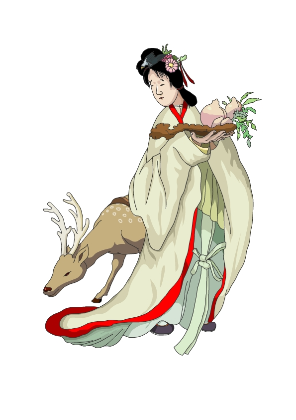
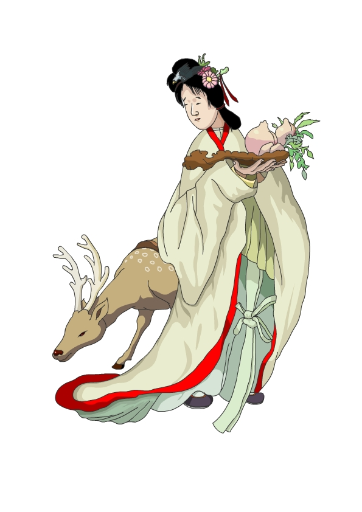

곰인 ‘도리’는 인간에 대해 고민이 많고 철학적인 성격을 가진다. 현재는 인간을 알기 위해 인간 세상에 섞여 살면서도 인간세상에 대해 환멸을 느끼면서도 동경한다. 매사에 생각이 많아 우울한 얼굴을 하고 있지만 소소한 일에 행복해지기도 하고 소소한 일에 쉽게 불행해지기도 한다.
마고신이 만든 마고동굴이라는 세계가 있는데 그곳으로부터 나와 현대사회를 경험하기 시작한다.
매운 음식을 좋아한다. 마라탕, 마라샹궈, 떡볶이 맥주가 도리의 소울푸드이다. 칸트 책을 늘 들고 다니지만 읽지는 않는다.
마고할미 설화를 배경으로 한다. 마고할미는 태초신, 거인신으로 세상을 만들었다. 단군이 등장하기도 전, 한국의 창세 구전 설화를 이루는 신으로, 다른 구전설화나 신화와 달리 여성 신이라는 특징을 가진다. 마고할미가 오줌을 누면 강이 되고, 한숨을 쉬면 폭풍이 된다. 마고할미는 태초의 신으로 세계 생성을 했지만 이후 가부장제 사회로 세대가 교체되면서 마고할머니는 폄하되고, 잊혀졌다. 이 캐릭터의 이야기는 태초에 마고할미가 인간을 만들고 동물을 만들면서 이후에 만들어진 곰, 도리로부터 시작한다. 곰이 되기 위해서는 마늘과 쑥을 먹을 뿐더러 인간에 대한 이해가 필요했고 ‘인간이란 무엇인가’에 대한 질문에 답을 해야 했다. 그러나 도리는 그 질문에 대한 답을 찾지 못했고 지금도 그것에 대해 고민하며 현대사회를 살아가고 있다.
 
